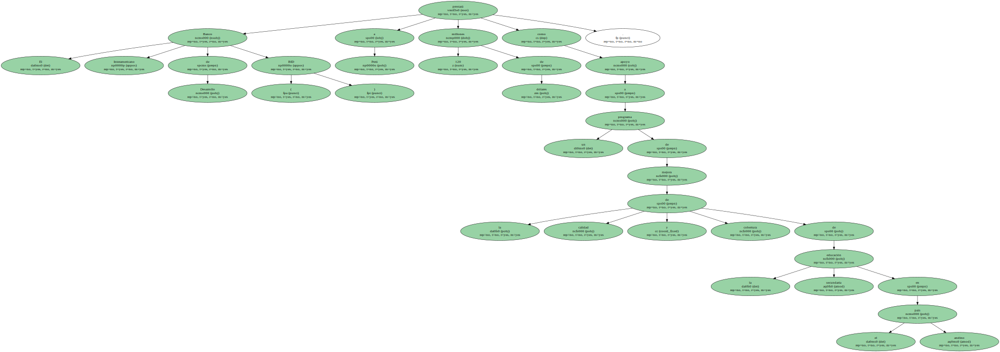
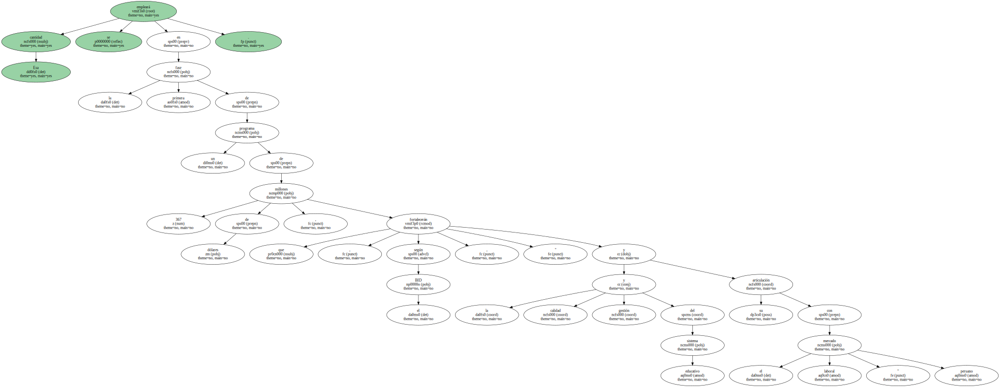
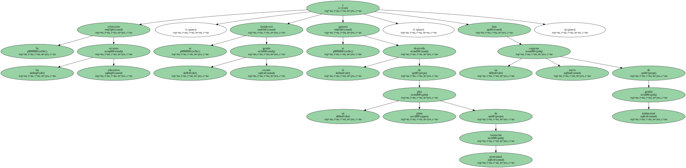
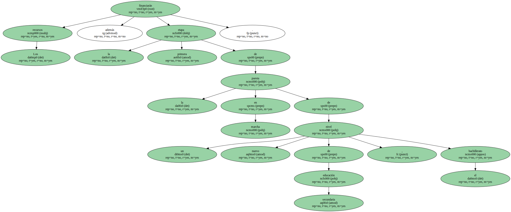
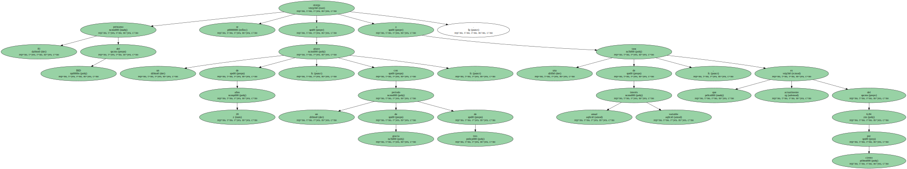
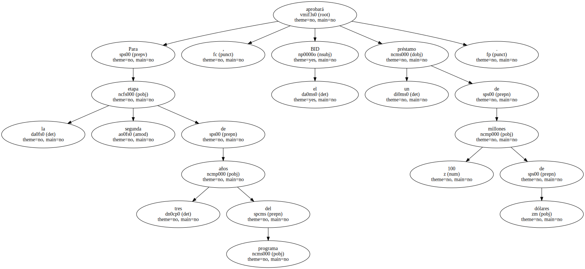

El Banco Interamericano de Desarrollo ( BID ) prestará a Perú 120 millones de dólares como apoyo a un programa de mejora de la calidad y cobertura de la educación secundaria en el país andino.
Esa cantidad se empleará en la primera fase de un programa de 367 millones de dólares , que , según el BID , " fortalecerán la calidad y gestión del sistema educativo y su articulación con el mercado laboral " peruano.
Se reforzarán los recursos educativos , se fortalecerá la gestión escolar y se apoyará el desarrollo de un plan piloto de formación profesional , bajo un nuevo esquema de gestión institucional.
Los recursos financiarán además la primera etapa de la puesta en marcha de un nuevo nivel de educación secundaria , el bachillerato.
La duración del programa es de seis años y la cantidad prestada por el BID se empleará en la financiación del primer trienio.

El préstamo del BID se otorga a un plazo de 20 años , con un período de gracia de tres , a una tasa de interés anual variable , que actualmente es del 6,84 por ciento.
Para la segunda etapa de tres años del programa , el BID aprobará un préstamo de 100 millones de dólares.
